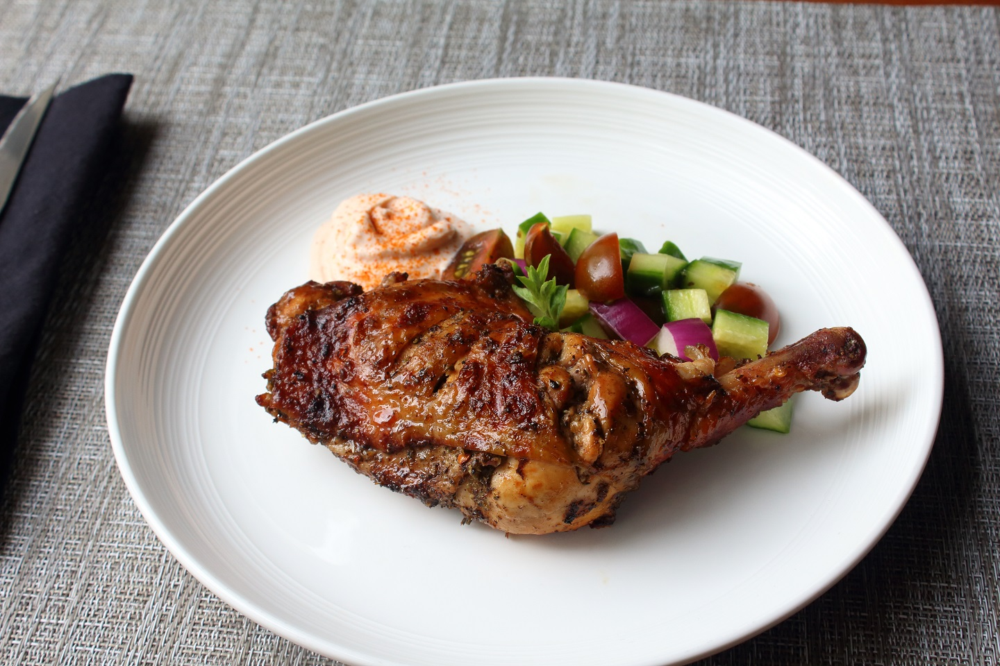

Grilled Greek Chicken

Why Grilled Greek Chicken?
This chicken is tender, juicy and flavorful.With plenty of lemon juice, fresh herbs, silky olive oil
and tons of garlic, this yogurt-based marinade infuses all your
favorite chicken pieces with the intense Greek flavors we love!
Ingredients
- 6 cloves garlic (or more to taste), crushed or very finely minced
- 2 tablespoons dried oregano
- 1 teaspoon red pepper flakes, or to taste
- 1 teaspoon freshly ground black pepper
- ½ cup lemon juice
- ¼ cup olive oil
- 1 tablespoon distilled white vinegar
- 6 chicken leg quarters
- 1 lemon, cut into wedges
Steps
- Whisk garlic, oregano, red pepper flakes, black pepper,
lemon juice, olive oil, and vinegar together in a large bowl.
- Make 2 slashes on the skin side down to the bone in
the thigh section and 1 in the leg section of each leg quarter.
This will help infuse pieces with marinade and allow faster cooking on the grill.
Season both sides of chicken generously with kosher salt.
Transfer to bowl with marinade and thoroughly coat all sides.
Cover and marinate in refrigerator 4 to 12 hours.
- Transfer chicken to paper-towel-lined sheet pan to drain slightly.
- Place leg quarters on grill skin side down over semi-direct heat
(avoid intense direct heat so chicken cooks evenly and skin doesn't burn).
Cook 6 or 7 minutes. Turn chicken and cook another 6 to 7 minutes.
Continue cooking and turning until internal
temperature reaches 165 degrees F (74 degrees C), 8 to 10 more minutes.
Serve with lemon wedges.